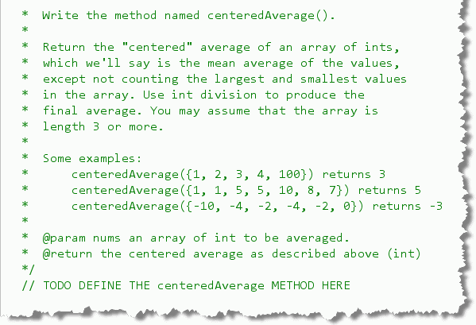
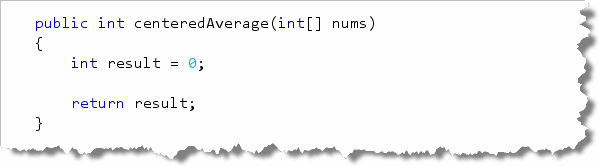
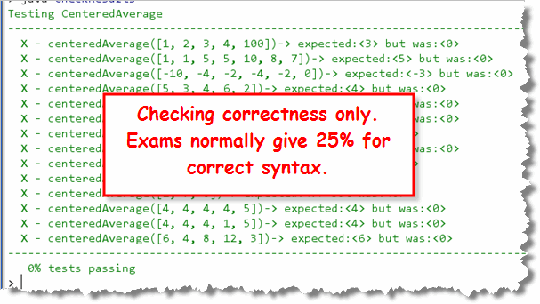
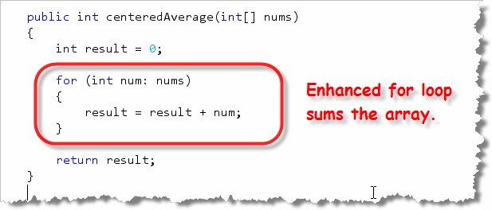
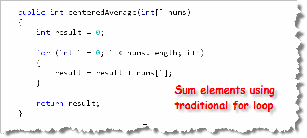
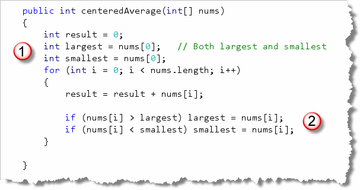
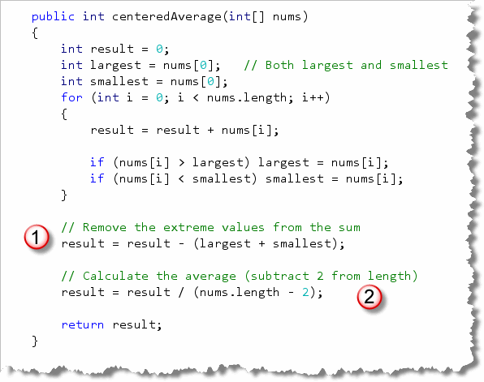
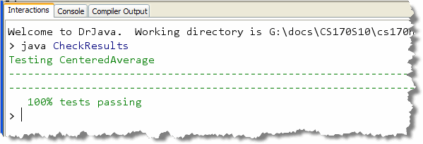

When working with arrays, you need to know how to code several different fundamental algorithms. You should be able to count the number of elements that meet a condition. You should also be able to add them up or average them. Finally, you should be able to find the smallest or largest element (or both) in a collection of data.
Loop Algorithms—Centered Average
Open CenteredAverage.java, which you'll find in
your Chapter11 folder, in DrJava and write the centeredAverage()
function. Here's what the problem definition looks like:

As you can see:- The problem requires you to calculate the average of a number of quizzes. To do that, you'll have to first sum the elements in the array.
- This average excludes the largest and smallest values, so you'll also have to compute both extreme values in the array.
That means to solve the problem you'll have to put to work all of the fundamental array algorithms we learned last week and this week. Why don't you see if you can solve the problem on your own, then come back here and check your answer?
Step 1: Guess What????
Solving an array problem is really no different than solving a simple function or a loop problem. You always start with the function skeleton!.
Here's the basic skeleton for the centeredAverage
problems:

As you can see, the function has a return type ofint
(which you can learn from both the example code and the @return tag),
and a single parameter of type int[], the array variable
named nums.
Once we've written the skeleton, the code should compile and we can
test it like this:

As the picture points out, the test I've supplied is only checking for correct output, but on the exams, I'll normally give you 25% if the syntax is correct (as this is).Step 2: Summing the Elements
Most array problems will require you to use a loop. Let's start by using
the "sum skeleton" that we just got finished reviewing. Here's what that
code looks like when we use the enhanced for loop:

and here's what it looks like with the traditionalfor:
Of course both loops leave the sum, not the average in the variableresult, so none of the tests will pass yet.
Step 3: Subtracting the Extreme Elements
Because we want a centered average, we first need to find the largest and smallest elements in the array, and then remove them before calculating the value. We could use another loop, but that's not necessary. We can use the same loop to calculate the sum, and to calculate the largest and smallest values.
Here's what that code should look like:

Notice that:- First we need to create variables for
largestandsmallest, and then initialize those elements to the first element in the array. - Then, inside the loop, we need to compare the current
element against the
largestandsmallestvariables, and reassign those values if necessary.
As you can see, the code is exactly the same as the example code we looked at in the review section.
Step 4: Finish the Calcs
Now we have all of the parts we need to finish our calculation. All you have to do is:
- Remove the largest and smallest values from the sum you calculated.
- Calculate the average by using the
lengthof the array. Of course, since we removed two elements from our sum, we'll want to subtract 2 from the length as well.
Here's the finished code that does that:

And here's CheckResults with all tests passing:
Run the Check program to test your work.